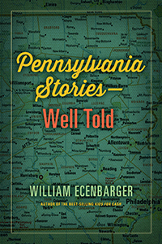

<HTML><head><script> (function(i,s,o,g,r,a,m){i['GoogleAnalyticsObject']=r;i[r]=i[r]||function(){  (i[r].q=i[r].q||[]).push(arguments)},i[r].l=1*new Date();a=s.createElement(o),  m=s.getElementsByTagName(o)[0];a.async=1;a.src=g;m.parentNode.insertBefore(a,m)   })(window,document,'script','//www.google-analytics.com/analytics.js','ga');   ga('create', 'UA-43183130-1', 'temple.edu');   ga('send', 'pageview'); </script><title>William Ecenbarger: Pennsylvania Stories&#8212;Well Told - Print</TITLE><link rel="stylesheet" href="../general.css" type="text/css"><SCRIPT LANGUAGE = JAVASCRIPT></SCRIPT></HEAD><BODY LINK="#3152A5" VLINK="#3152A5" ALINK=Gray BGCOLOR=White><CENTER>
     
     <P CLASS=intro><br>An engrossing compendium of stories on the people, places, and events that make Pennsylvania unique. Well told.<br><br></P></CENTER><br>&nbsp;<!--none//--><Table width="100%" border=0 cellspacing=5><tr><td width="175" align="center"></td><td>
     
     <h1 class = "booktitle">Pennsylvania Stories&#8212;Well Told</h1>
     <h3 class="author">William Ecenbarger</h3><p class="info"><p class="info">cloth EAN:  978-1-4399-1465-6 (ISBN:1-4399-1465-6)</br>$25.00, May 17, <font color=#990033>Available</font><br><p class="info">Electronic Book EAN: 978-1-4399-1467-0 (ISBN:1-4399-1467-2)</br>$25.00, <font color=#990033>Available</font><br>
      <p class="info">244 pp, 5.5 x  8.25</p></td></tr></table></P></td></tr></table><BR>
       
       <BLOCKQUOTE>
        <p>"<em>If Pennsylvania had a poet laureate, it would be Bill Ecenbarger. Throughout a long career as one of the most distinguished journalists in the state, he has captured the Commonwealth's unique spirit&#8212;in all its glory and all its eccentricity. </em>Pennsylvania Stories&#8212;Well Told<em> pulls together the best of his best stories, each impeccably researched and beautifully written. Learn about the literary great John Updike, the role of the Ku Klux Klan, a popular governor's very public fight for life, the notorious state mental hospital known as Byberry. These tales and others create a rich mosaic of Pennsylvania culture and history. I heartily recommend this book.</em>"<br>
          &#8212;<strong>Former Governor Richard L. Thornburgh</strong><br>
        </p>
        <p></BLOCKQUOTE>
        
        <P><p>With a biting mix of wonder and pride, William Ecenbarger observes that in the quirky state of Pennsylvania, the town of Mauch Chunk changed its name to Jim Thorpe&#8212;even though the famous Indian athlete never set foot in it.<br><p>A former journalist for the<i> Philadelphia Inquirer Magazine, </i>and author of the bestseller <i>Kids for Cash, </i>Ecenbarger has collected a dozen of his fascinating articles showcasing the Keystone State in <i>Pennsylvania Stories</i>&#8212;<i>Well Told. </i>He provides a history of the pencil, and considers why the first day of Pennsylvania's deer hunting season&#8212;the world's largest participatory sporting event&#8212;is an unofficial state holiday, closing schools and state offices. Ecenbarger also profiles George "Boom Boom" Zambelli, the internationally renowned pyrotechnic king, and goes driving with Pennsylvania native John Updike in rural Berks County, PA. <br><p>Other fascinating tales unfold in <i>Pennsylvania Stories, </i>from an inspiring tale of Governor Bob Casey's double organ transplant, to darker essays on the electric chair and the Ku Klux Klan, to a mile-by-mile appreciation of the Pennsylvania Turnpike. <br><p>In these weird and wonderful stories, Ecenbarger highlights just what makes Pennsylvania both eccentric and great. His book is a delightfully intriguing read for natives and curious outsiders alike.<br><P CLASS="top"><A HREF="#top">BACK TO TOP</A></P>
        
        <P><h2  class="inpageheading"><A NAME="excerpt"></a>Excerpt</h2><p>Read the Introduction (pdf). <p><br>
        
        <P CLASS="top"><A HREF="#top">BACK TO TOP</A></P></P>
        
        <P><h2  class="inpageheading"><A NAME="reviews"></a>Reviews</h2>
      <p><em>"Bill Ecenbarger&#8212;to regular </em>Inquirer<em> readers, one need say no more. Put that name on a story, and they know that what awaits them is a small masterpiece of writing, wisdom, and wit. To editors at the </em>Philadelphia Inquirer<em>, Bill Ecenbarger is a godsend&#8212;a writer who covers an inordinately wide range of topics and turns in colorful, provocative stories that you want to read out loud to anyone who will listen.</em>"<br>
        &#8212;<strong>Fred Mann,</strong> editor, <em>Philadelphia Inquirer</em>
		  
		       
      <p><em>"Reading the stories is like listening to your favorite quirky friend. The language rolls like a perfectly poured beer into a glass, gleaming gold and with just the right amount of froth."</em>
		 <br> &#8212;<em><strong>Press Enterprise</strong></em></p><br>
     
      
      <P CLASS="top"><A HREF="#top">BACK TO TOP</A></P></b></p><p>
      
      <h2 class="inpageheading"><A NAME="contents"></a>Contents</h2><P><SPAN STYLE="font-family: 'Verdana';font-size: 13px;font-weight: bold;" >Introduction<BR></SPAN><SPAN STYLE="font-family: 'Verdana';font-size: 13px;" ><BR></SPAN><SPAN STYLE="font-family: 'Verdana';font-size: 13px;font-weight: bold;" >Intimate Strangers<BR></SPAN><SPAN STYLE="font-family: 'Verdana';font-size: 13px;" >Mike Lucas Was Struggling to Build a Life. Bob Casey Was Fighting to Keep His. This Is Their Story.<BR><BR></SPAN><SPAN STYLE="font-family: 'Verdana';font-size: 13px;font-weight: bold;" >Passing the Torch<BR></SPAN><SPAN STYLE="font-family: 'Verdana';font-size: 13px;" >Former Klansman Roy Frankhouser Still Dreams of the Day When Men Will Be Judged by the Color of Their Skin rather than the Content of Their Character.<BR><BR></SPAN><SPAN STYLE="font-family: 'Verdana';font-size: 13px;font-weight: bold;" >The Shame that Was Byberry<BR></SPAN><SPAN STYLE="font-family: 'Verdana';font-size: 13px;" >To Behold the Horrors of This Philadelphia Mental Hospital Is to Wonder: Just Who Are the Lunatics?<BR><BR></SPAN><SPAN STYLE="font-family: 'Verdana';font-size: 13px;font-weight: bold;" >The Pencil<BR></SPAN><SPAN STYLE="font-family: 'Verdana';font-size: 13px;" >What's Portable, Chewable, Doesn't Leak, and Is Recommended by Ann Landers?<BR><BR></SPAN><SPAN STYLE="font-family: 'Verdana';font-size: 13px;font-weight: bold;" >The Great Zambelli's Theory of the Big Bang<BR></SPAN><SPAN STYLE="font-family: 'Verdana';font-size: 13px;" >A Profile of Mr. Fireworks, George &quot;Boom Boom&quot; Zambelli<BR><BR></SPAN><SPAN STYLE="font-family: 'Verdana';font-size: 13px;font-weight: bold;" >John O'Hara Could Go Home Again<BR></SPAN><SPAN STYLE="font-family: 'Verdana';font-size: 13px;" >But No Cheering Crowd Would Await the Once-Despised Novelist in Pottsville.<BR><BR></SPAN><SPAN STYLE="font-family: 'Verdana';font-size: 13px;font-weight: bold;" >Drawing the Line<BR></SPAN><SPAN STYLE="font-family: 'Verdana';font-size: 13px;" >The Surveyors Charles Mason and Jeremiah Dixon Were Hired in 1763 to Settle a Simple Border Dispute. They Never Knew Their Work Would Become One of the Most Famous Boundaries in the World.<BR><BR></SPAN><SPAN STYLE="font-family: 'Verdana';font-size: 13px;font-weight: bold;" >The Chair of Death<BR></SPAN><SPAN STYLE="font-family: 'Verdana';font-size: 13px;" >Some Have Been Dragged to It; Others Have Run to It. They Have Died Crying and Laughing. Many Have Died as Converts; Others Have Shouted Their Rejections. No Two Stories Are Alike.<BR><BR></SPAN><SPAN STYLE="font-family: 'Verdana';font-size: 13px;font-weight: bold;" >Why Would a Nice Town like Jim Thorpe Want to Be Mauch Chunk&mdash;Again?<BR></SPAN><SPAN STYLE="font-family: 'Verdana';font-size: 13px;" >How a Pennsylvania Town Came to Be Called Jim Thorpe&mdash;even though the Famous Native American Athlete Never Set Foot in It<BR><BR></SPAN><SPAN STYLE="font-family: 'Verdana';font-size: 13px;font-weight: bold;" >Pennsylvania's Deer-Hunting Season<BR></SPAN><SPAN STYLE="font-family: 'Verdana';font-size: 13px;" >The Largest Participatory Recreation Event in the World?<BR><BR></SPAN><SPAN STYLE="font-family: 'Verdana';font-size: 13px;font-weight: bold;" >Tales of the Pennsylvania Turnpike<BR></SPAN><SPAN STYLE="font-family: 'Verdana';font-size: 13px;" >The Pennsylvania Turnpike Is, in a Very Real Sense, America's Highway&mdash;a Fenced City, 470 Miles Long and 200 Yards Wide, with a Heterogeneous and Resurgent Stream of Mobile Citizens. And Every Mile Has a Story.<BR><BR></SPAN><SPAN STYLE="font-family: 'Verdana';font-size: 13px;font-weight: bold;" >Updike Is Home<BR></SPAN><SPAN STYLE="font-family: 'Verdana';font-size: 13px;" >The Author Vowed to Leave His Pennsylvania Home Behind, but He Never Quite Escaped&mdash;in His Work or His Life.<BR><BR></SPAN><SPAN STYLE="font-family: 'Verdana';font-size: 13px;font-weight: bold;" >Acknowledgments</SPAN></P><br>
      
      
      <P CLASS="top"><A HREF="#top">BACK TO TOP</A></P></p><P>
      
      <H2  class="inpageheading"><A NAME="author bio"></a>About the Author(s)</H2><p><b>William Ecenbarger</b>, a freelance writer, is the author of <i>Walkin' the Line, Glory by the Wayside: The Old Churches of Hawaii</i>, and <i>Kids for Cash: Two Judges, Thousands of Children, and a $2.6 Million Kickback Scheme</i>, and the co-author of <i>Catching Lightning in a Bottle: How Merrill Lynch Revolutionized the Financial World</i> (with Winthrop H. Smith) and <i>Making Ideas Matte</i>r<i>: My Life as a Policy Entrepreneur</i> (with Dwight Evans).<br>
      
      <P CLASS="top"><A HREF="#top">BACK TO TOP</A></P></P></P>
      
      <P><h2  class="inpageheading"><A NAME="subjects"></a>Subject Categories</h2><P><A HREF="/tempress/general.html" TARGET="_top">General Interest</a><BR><P><A HREF="/tempress/philly.html" TARGET="_top">Philadelphia Region</a></P></P>
      
      
      <P CLASS="top"><A HREF="#top">BACK TO TOP</A></P></td><td width=2%>&nbsp;</td><td width=5>&nbsp;</td></tr></table><BR><font face="Arial" size="1"><a href="copyright.html" OnMouseOver="window.status='Web Copyright Policy';return true;" OnMouseOut="window.status=''" TITLE="Web Copyright Policy">&copy;</a> 2017 <a href="http://www.temple.edu" target="new" OnMouseOver="window.status='Link to Temple University home page';return true;" OnMouseOut="window.status=''" TITLE="Link to Temple University home page">Temple University</a>. All Rights Reserved. This page: http://www.temple.edu/tempress/titles/2445_reg.html</font></BODY></HTML>                    
